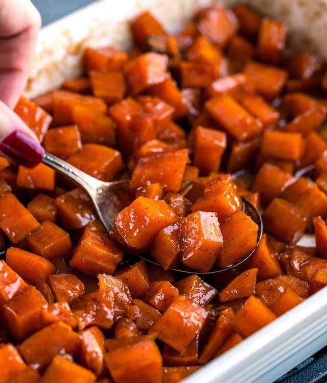

Baked Candied Yams
Candied yams are a huge part of southern cuisine. Check out how easy it is to make these soul food yams today!

Ingredients
- 5 medium sized yams
- 8 tbsp salted butter
- 1 tsp ground cinnamon
- 1/2 tsp ground nutmeg
- 1/4 tsp ground clove
- 1/4 tsp ground ginger
- 1 cup granulated sugar
- 1/4 cup brown sugar
- 1 tbsp pure vanilla extract
Instructions
- Preheat the oven to 350 F.
- Wash the yams.
- Peel, then chop the yams (make sure that they are about 1/2 inch thick).
- Place the yams into a 9x13 bake dish.
- Place the butter into a medium sized pot, then melt it over medium heat.
- Once the butter is melted, sprinkle in the white & brown sugar, ground cinnamon,ground nutmeg, ground ginger, and ground clove.
- Turn the stove off, mix the ingredients, then add in the vanilla extract.
- Pour the candied mixture over the yams, and try to coat all the yams with the candied mixture.
- Next, cover the bake dish with foil, then bake the yams in the oven for 30 minutes.
- Remove the yams from the oven, and baste them with the candied mixture.
- Cover the yams, and bake them for another 15-20 minutes.
- Remove the yams from the oven, and let them sit for about 10 minutes before serving.
- Enjoy!